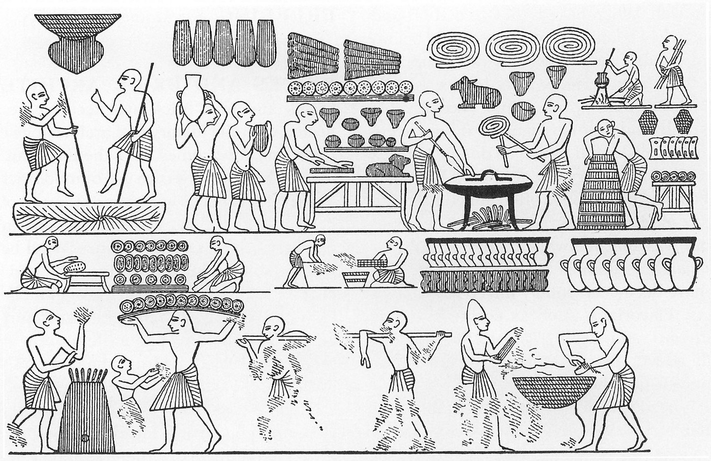

Bread is a staple food prepared from a dough of flour (usually wheat) and water, usually by baking. Throughout recorded history and around the world, it has been an important part of many cultures' diet. It is one of the oldest human-made foods, having been of significance since the dawn of agriculture, and plays an essential role in both religious rituals and secular culture.
Bread was central to the formation of early human societies. From the Fertile Crescent, where wheat was domesticated, cultivation spread north and west, to Europe and North Africa, and east towards East Asia. This in turn led to the formation of towns, as opposed to the nomadic lifestyle,and gave rise to more and more sophisticated forms of societal organization. Similar developments occurred in the Americas with maize and in Asia with rice. 
Different types of bread have been beloved by so many for so long, so it’s not surprising that a crop of superstitions about the foodstuff have arisen, like the legend that whoever eats the last slice will have to kiss the cook, or the old wives’ tale that eating crusts will make your hair curl. While Merriam-Webster defines bread as "usually baked and leavened food made of a mixture whose basic constituent is flour or meal," it’s also routinely boiled, steamed and fried.
Just about every culture around the globe has their own type of bread, from Australia’s iconic damper, a wheat-based bread traditionally baked in campfire coals, to mantou, a Chinese steamed bun made with white flour. There’s a whole wonderful world of bread beyond basic white, so why not liven up your table with one of the following bread types? (Check out different types of pasta and types of flour too.)